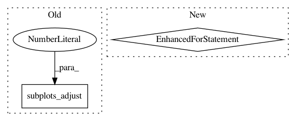

9018fd6e5f6e3e0ce07e734cf71ba7abac649997,scanpy/tools/dpt.py,,plot_groups,#Any#Any#Any#Any#Any#Any#,218
Before Change
for igroup, group in enumerate(ddata["groupmasks"]):
plott.group(axs[2], igroup, ddata, ddpt["Y"][:, comps], params["layout"])
axs[2].legend(frameon=False, loc="center left", bbox_to_anchor=(1, 0.5))
pl.subplots_adjust(right=0.88)
if sett.savefigs:
pl.savefig(sett.figdir + ddpt["groups_writekey"]
+ sett.plotsuffix + "."+sett.extf)
After Change
if not rowcat + "_colors" in ddata:
ddata[k + "_colors"] = pl.cm.get_cmap(params["cmap"])(
pl.Normalize()(ddata[k + "_ids"]))
for icat in ddata[rowcat + "_ids"]:
plott.group(axs[2], rowcat, icat, ddata, ddpt["Y"][:, comps], params["layout"])
axs[2].legend(frameon=False, loc="center left", bbox_to_anchor=(1, 0.5))
pl.subplots_adjust(right=params["adjust_right"])
plott.savefig(ddpt["groups_writekey"] + sett.plotsuffix)
In pattern: SUPERPATTERN
Frequency: 3
Non-data size: 2
Instances
Project Name: theislab/scanpy
Commit Name: 9018fd6e5f6e3e0ce07e734cf71ba7abac649997
Time: 2017-02-02
Author: f.alex.wolf@gmx.de
File Name: scanpy/tools/dpt.py
Class Name:
Method Name: plot_groups
Project Name: uber/ludwig
Commit Name: e3d1e6dfd06c35dec767c53b930fa69fc2ff7b12
Time: 2020-04-14
Author: w4nderlust@gmail.com
File Name: ludwig/utils/visualization_utils.py
Class Name:
Method Name: hyperopt_pair_plot
Project Name: daavoo/pyntcloud
Commit Name: 861d9b291f2402c7f89e05bccf00f446487dd0d0
Time: 2017-03-06
Author: daviddelaiglesiacastro@gmail.com
File Name: pyntcloud/structures/voxelgrid.py
Class Name: VoxelGrid
Method Name: plot_feature_vector